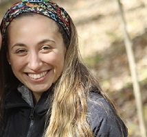

- Education
-
University of Massachusetts Amherst
Major: Microbiology
Minor: English
GPA: 3.80
-
- Skills
-
Lab Skills
Sterile Tehnique, Mice Dissection,
DNA extraction, purification, library prep, Streak and spread plating,
Gram Staining
Computer skills
Microsoft productivity software (Word, Excel, etc), Windows, HTML/CSS
Health Skills
CPR and First Aid certified
- Experience
-
UMass Amherst Bake Shop
Supervisor - Amherst, MA - 2017-2019
- Oversaw all student workers within the bakeshop
- Communicated directly with head chefs to ensure completion of all tasks
South Shore Science CenterLead Counselor - Norwell, MA - 2018
- Led a team of four other counselors and 10-25 children per day
- Created weekly science curriculms while establishing passion for the outdoors
Brigham and Women's HospitalResearch Intern - Boston, MA - 2017
- Studied the effect of the microbiome on neurological diseases
- Collaborated with post docs and technicians to complete different experiences
- Participated in lab meetings and presentations
- Hobbies
- Hiking, Rock climbing, Reading